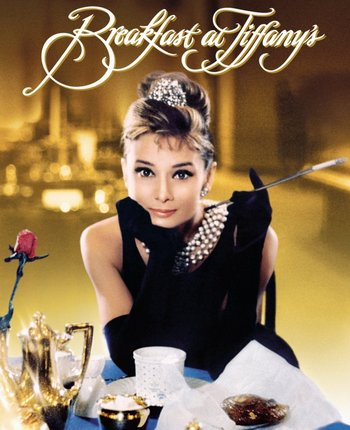

«Сніда́нок у „Ті́ффані“» (англ. Breakfast at Tiffany's)
Опис фільму:
Американський кінофільм-мелодрама 1961 року з Одрі Гепберн і Джорджем Пеппардом у головних ролях, знятий кінокомпанією «Paramount Pictures». Сценарій написаний за мотивами однойменної повісті Трумена Капоте.
Сюжет:
Пол Варджак, письменник, який живе коштом багатої коханки, переїжджає на нову квартиру і знайомиться з сусідкою — Голлі Ґолайтлі, легковажною дівчиною, що марнує життя і мріє стати утриманкою багатого чоловіка. Вона плутає імена, зберігає телефон у валізі під ліжком, тікає з квартири через вікно й марить ювелірним магазином «Tiffany & Co.». Коли Голлі знайде місце, де їй буде так само затишно, як у «Tiffany & Co.», вона перестане тікати від життя та дасть ім'я своєму котові.